14 comparaisons réelles : Lovable à gauche, Expo à droite. Captures aux mêmes dimensions et valeurs, sans redimensionner les originaux. L’accès natif aux réglages avancés est l’adaptation validée. Les trois vues supplémentaires ne possèdent pas d’équivalent Lovable. Ces captures web ne valident pas les téléphones.
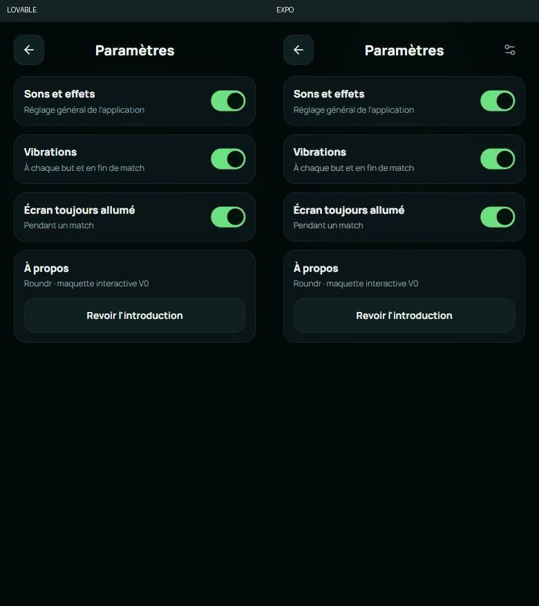
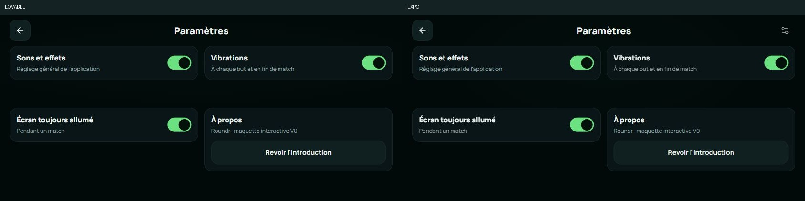
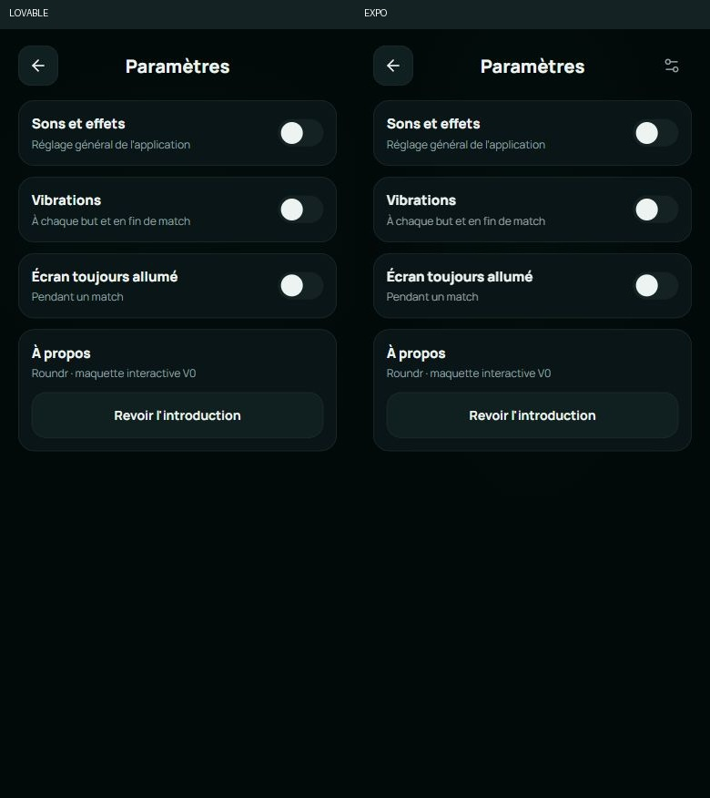
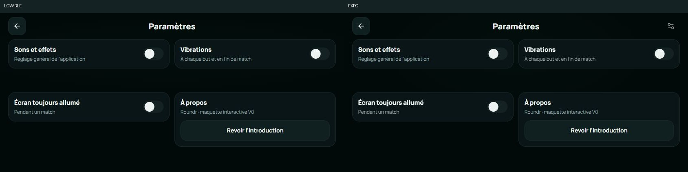
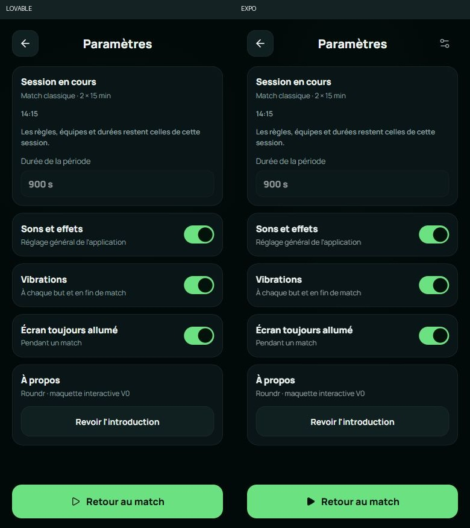
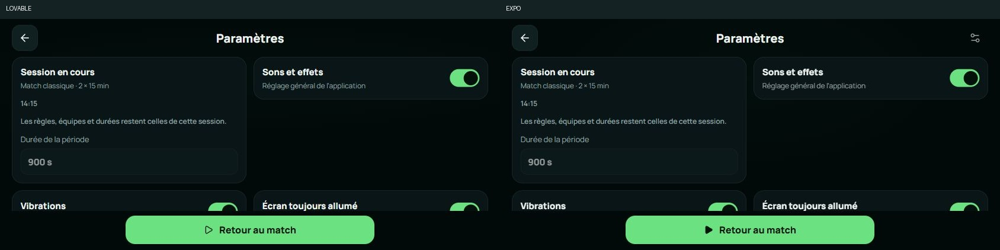
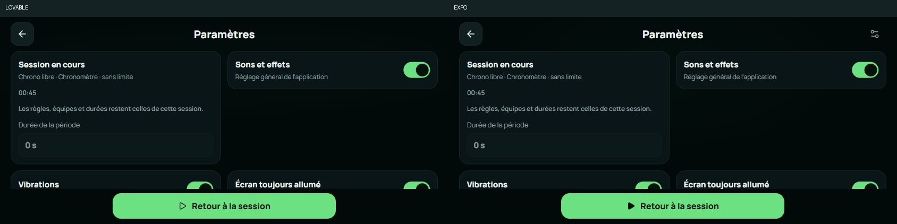
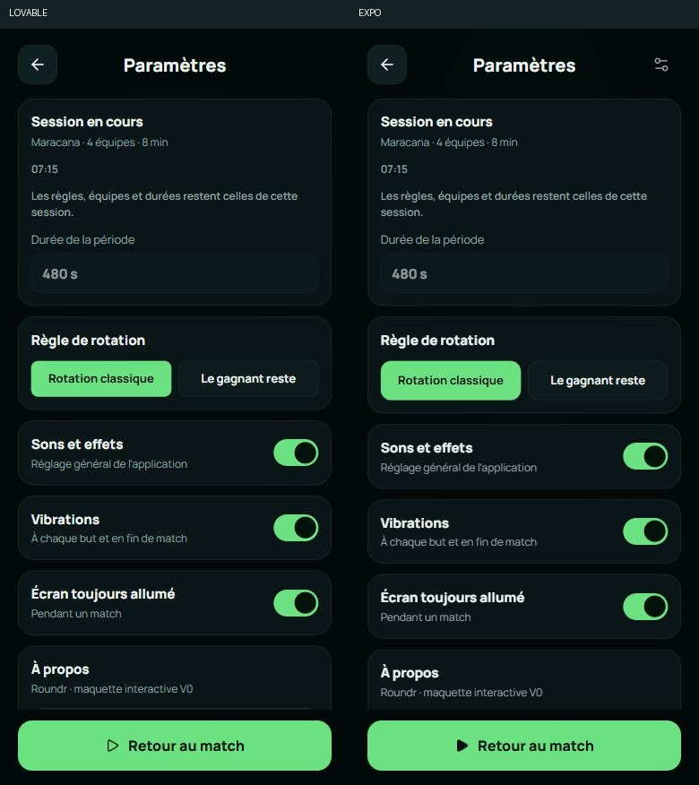
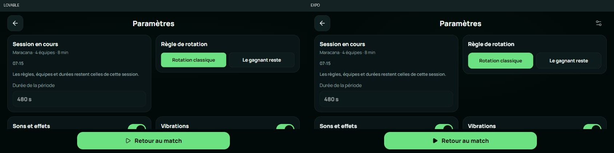
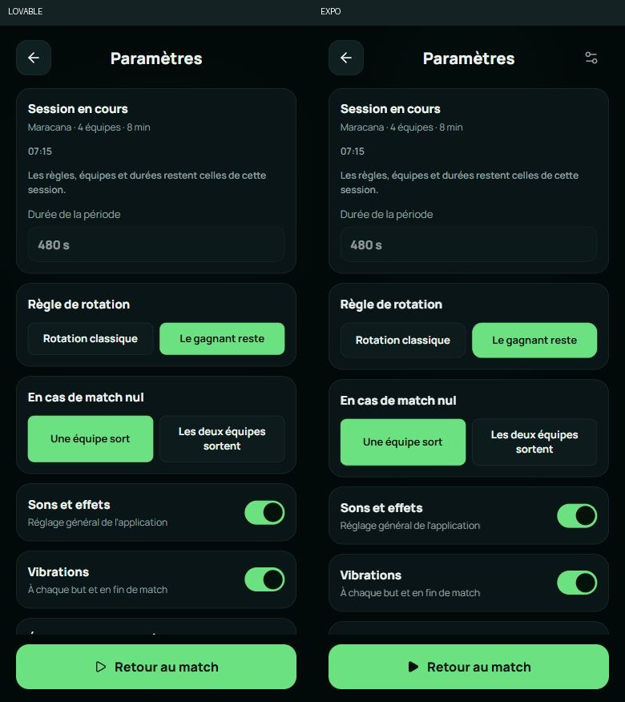
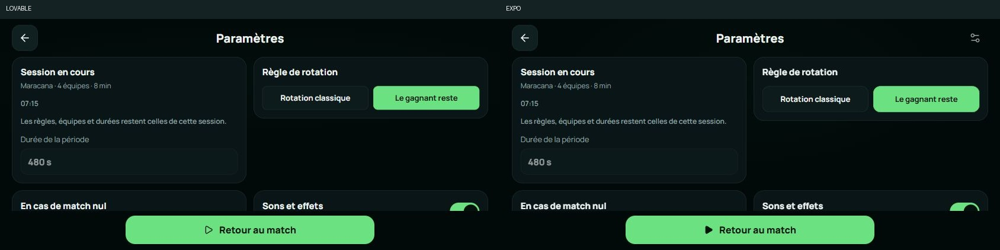
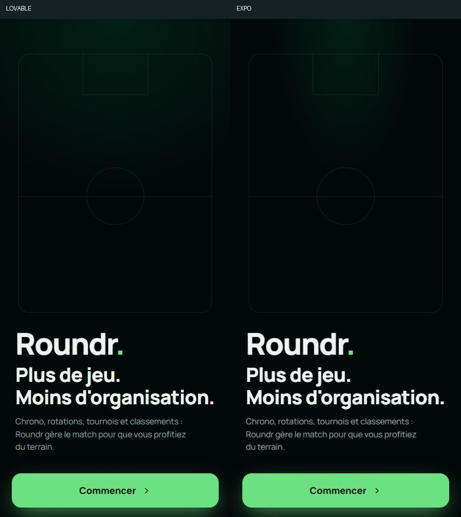
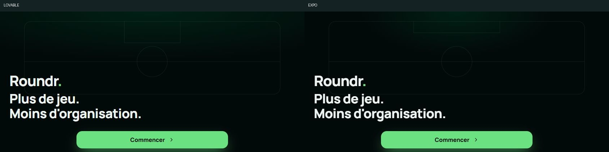
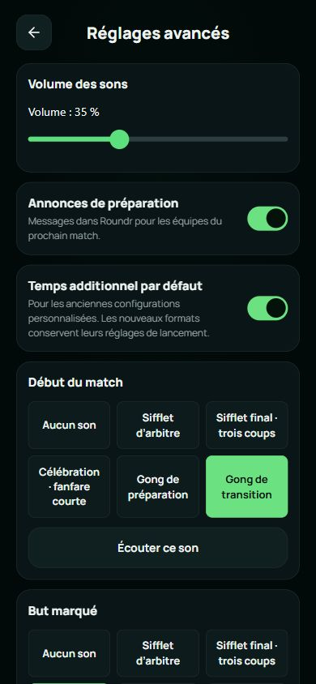
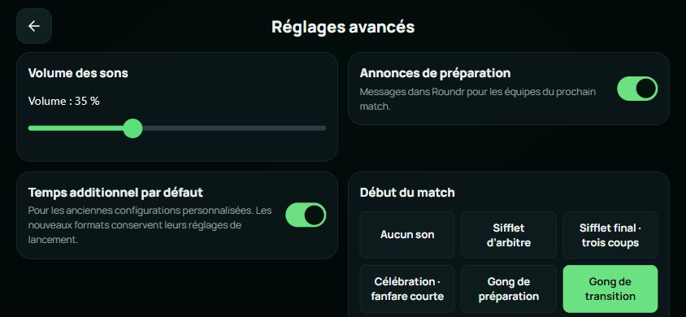
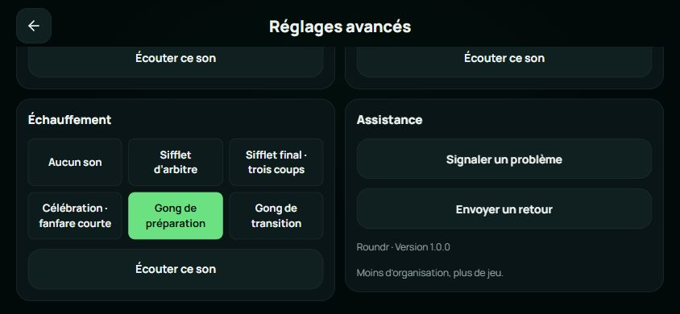